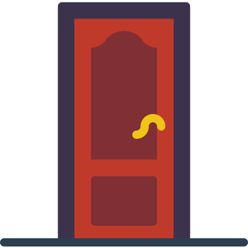

<!doctype html>
<html>
<head>
  <meta charset="UTF-8">
  <title>No More Monty Hall Confusion</title>
  <!-- TODO: favicon -->
  <meta name="description" content="Understand the Monty Hall problem at once.">

  <meta property="og:url" content="https://game.hyeon.me/montyhall">
  <meta property="og:title" content="No More Monty Hall Confusion">
  <!-- TODO: OG 이미지 <meta property="og:image" content=""> -->
  <meta property="og:site_name" content="game.hyeon.me">
  <meta property="og:description" content="Understand the Monty Hall problem at once.">

  <meta name="twitter:site" content="@simnalamburt">
  <meta name="twitter:title" content="No More Monty Hall Confusion">
  <meta name="twitter:description" content="Understand the Monty Hall problem at once.">
  <meta name="twitter:card" content="summary_large_image">
  <!-- TODO: 이미지 <meta name="twitter:image" content=""> -->
  <meta name="twitter:creator" content="@simnalamburt">
  <meta name="twitter:url" content="https://game.hyeon.me/montyhall">
  <style>
  * {
    box-sizing; border-box;
  }

  body {
    margin: 0;
    background: #eee;
  }

  #game {
    /* --repeat-count 는 js로 정의됨 */
    --padding-size: 50px;
    --gap-size: 20px;
    --game-size: calc(100vmin - 2*var(--padding-size));
    --door-size: calc(
      (var(--game-size) - (var(--repeat-count) - 1)*var(--gap-size))/var(--repeat-count)
    );

    display: grid;
    width: var(--game-size);
    height: var(--game-size);
    margin: calc(var(--padding-size)/2) auto;
    padding: calc(var(--padding-size)/2);
    background: white;
    grid: repeat(var(--repeat-count), var(--door-size)) / repeat(var(--repeat-count), var(--door-size));
    grid-gap: var(--gap-size);
  }

  #game > img {
    width: var(--door-size);
    height: var(--door-size);
    object-fit: cover;
  }
  </style>
</head>
<body>


<script type="module">
// TODO: 버전 고정하기
import { h, render } from 'https://unpkg.com/preact@latest?module'
import { useReducer } from 'https://unpkg.com/preact@latest/hooks/dist/hooks.module.js?module'
import produce from 'https://cdn.jsdelivr.net/npm/immer@5.2.1/dist/immer.module.min.js'
import htm from 'https://unpkg.com/htm@2.2.1/dist/htm.module.js?module'

const html = htm.bind(h)

/*
type State =
  { t: 'begin', size: number, car: number } |
  { t: 'answer_right', size: number, car: number, bait: number } |
  { t: 'answer_wrong', size: number, car: number, wrong_answer: number } |
  { t: 'win', size: number, car: number } |
  { t: 'lose', size: number, car: number, wrong_answer: number } |
  { t: 'errored' }

type Action =
  ['first_answer', number] |
  ['second_answer', number]
*/

const reducer = (state, action) => {
  const [cmd, args] = action
  switch(cmd) {
    case 'first_answer':
      const [answer] = args
      switch(state.t) {
      /* TODO
        case 'begin': return (
          state.car === answer ?
          { t: 'answer_right', kkkkkkkkkkkkkkk
          */
        default: return { t: 'errored' }
      }
    case 'second_answer':
      // TODO
      return
  }
}

let initialState = { type: 'begin', size: 7, car: randint(7**2) }

const App = () => {
  const [state, dispatch] = useReducer(reducer, initialState)

  // TODO; errored 처리

  return html`
    <div id=game>
      ${repeat(state.size, row =>
        repeat(state.size, col => {
          const n = row*state.size + col
          return html`
             dispatch(['first_answer', n])} />
          `
        })
      )}
    </div>
    <style>
    #game {
      --repeat-count: ${state.size};
    }
    </style>
  `
}

render(h(App), document.body)

function repeat(count, func) {
  return Array.from({ length: count }, (_, i) => func(i))
}

// Return a random integer in [0, n)
function randint(n) {
  return (Math.random() * n)|0
}
</script>


</body>
</html>
<!-- TODO: https://github.com/simnalamburt/web-checklist -->
<!-- TODO: IE로 들어오면 경고창 띄우기 -->
<!-- TODO: 모바일 테스트 -->
